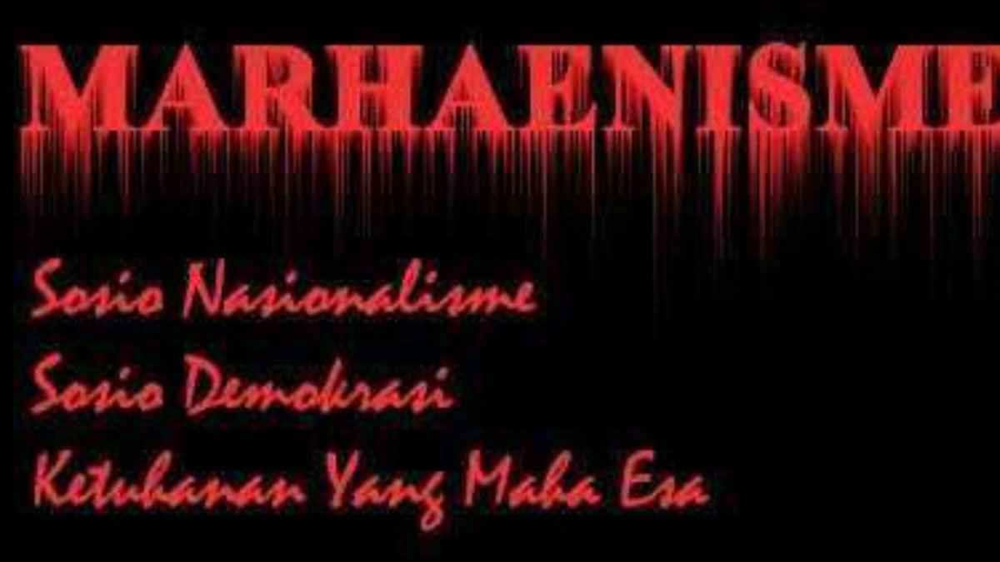

Membumikan Marhaenisme di Era Digital
Oleh: Bung Hannan | 28 Juli 2025
Marhaenisme, sebuah ideologi yang digagas oleh Bung Karno, seringkali menjadi subjek diskusi yang tak pernah usang. Berakar dari kondisi rakyat Indonesia yang tertindas meski memiliki alat produksi sendiri, Marhaenisme menjadi antitesis terhadap kapitalisme dan imperialisme. Namun, pertanyaan mendasar muncul: masih relevankah Marhaenisme di tengah gempuran era digital saat ini?
Di era digital, bentuk-bentuk eksploitasi telah bertransformasi. Petani dan buruh klasik mungkin telah berkurang, namun muncul "Marhaen-marhaen baru": pengemudi ojek online yang memiliki motor sendiri namun terjerat oleh sistem aplikasi, pemilik warung kecil yang harus bersaing dengan raksasa e-commerce, hingga pekerja lepas (freelancer) yang tidak memiliki jaminan sosial. Mereka semua memiliki alat produksi—motor, laptop, keahlian—namun nasibnya tetap ditentukan oleh kekuatan kapital yang lebih besar. Di sinilah relevansi Marhaenisme terlihat jelas; ia memberikan kacamata untuk membaca bentuk penindasan gaya baru.
"Janganlah kita menjadi bangsa penjiplak! Bangunlah Marhaenisme yang sesuai dengan urat-nadi bangsa kita sendiri."
Tantangannya pun tidak mudah. Individualisme yang didorong oleh media sosial dan fragmentasi kelas pekerja digital membuat pengorganisasian massa menjadi lebih sulit. Oleh karena itu, peran kader GMNI sebagai pejuang-pemikir menjadi krusial. Tugas kita adalah menerjemahkan kembali nilai-nilai Marhaenisme ke dalam bahasa yang dipahami generasi sekarang, mengadvokasi kebijakan yang melindungi para pekerja digital, dan membangun solidaritas di antara kaum Marhaen modern.
Pada akhirnya, membumikan Marhaenisme di era digital bukanlah tentang nostalgia, melainkan tentang adaptasi dan perjuangan berkelanjutan. Api Marhaenisme harus terus menyala, menerangi jalan perjuangan menuju masyarakat adil dan makmur yang dicita-citakan.